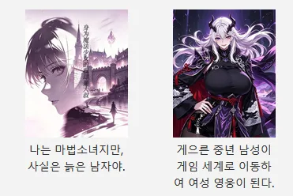
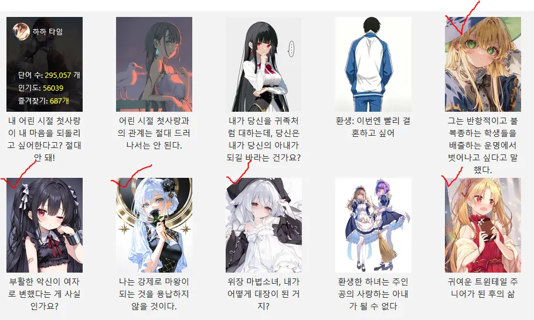
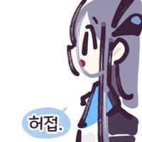
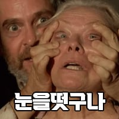

인기작 중 절반이 TS임


인기작 중 절반이 TS임
중국에서 원래부터 씹덕한테 ts 나름 인기 많은 속성이었음
페이커 ts시켜서 페이커가 LPL의 대모이자 신으로 살아가는 웹소도 있잖음ㅋㅋ
TS 절대 안보는 사람이 있는 반면 TS만 보는 사람이 있음. 조회 최저한도가 보장됨
임청하의 동방불패만해도 답이 나오는구만
원래 저쪽이 원조임
중국무협의 천마포지션이 일월신교 교주인거 생각해보면 TS천마도 저쪽이 먼저고
한국 웹소설도 그냥 내놨어도 괜찮았을거 같은 ts 소설들 존나많던데
생각해보니 중국 웹소에도 무협,판타지 명작 진짜 많겠다
표본수가 몇십 몇백배일테니 ㄷㄷㄷ
근데 정식으로 넘어오는건 죄다 선협..
여자가 되는 것이 꿈이라니...
혼란하다
정상화된건데
ts는 깊게 이해할 필요없음 이젠 그냥 상태창 같은 도구일 뿐임
남자 같은 성격을 가진 초절정 미소녀가 연애도 안하지만 다른 미소녀 캐릭터와 부비적 거리는 개연성을 부여하는 장치 정도지
성정체성의 혼란 같은 에피소드를 써먹던 초기 ts는 이미 끝남
미소녀여고생쟝으로 ts했다고요?
까짓거 해보죠!!
Ts로리물은 클래식임

옳게된 나라임
응 틀딱픽으로도 묵향이 있어
원래 인기있는 장르야
한국도 노벨피아는 ts강점기임
내가아는 ts는 샴푸밖에 없었는데 알지 않아야할것을 알아버렸네
눈을 떴구나
씨ㅣㅣㅣㅣ팔 노벨피아냐고
똥게이들
반대로 남자가 된 여자는 수요가 있음?
비엘물쪽에 근근히 보임

ㅋㅋ 한국도 똑같음
노벨피아도 ts 거지같이 많은데 뭘..
TS는 진짜 왜 보는건지 이해가안됨
몰입이 전혀 안돼
생각해보면 비뢰도에서도 약간 여장 같은거 나오고, 묵향도 ts 나왔던걸 보면 우리도 머..
우리도 묵... ㅋ
그맛이있지
왜 똥게이물이 인기인거냐 웹소설들은...
문피아나 다른데는 전업작가로 먹고살려고 연재하는 데라